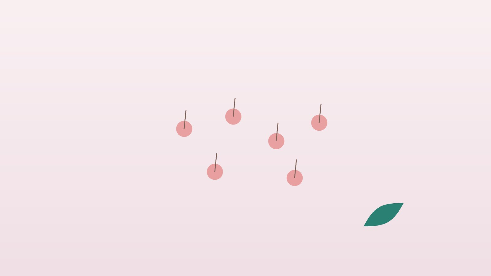

건강 칼럼 · 인천 모낭염 한의원
털구멍마다 붉은 뾰루지가 반복된다면, 모낭염 관리

나의 뾰루지, 모낭염일까요?
- 가운데에 털이 하나 있는 붉은 뾰루지가 여러 개 생긴다
- 면도나 왁싱 뒤 턱, 겨드랑이, 다리에 오돌토돌 올라온다
- 운동하고 땀을 흘린 뒤 가슴과 등에 가려운 좁쌀이 돋는다
- 엉덩이나 허벅지 안쪽에 작은 고름점이 자꾸 생긴다
- 목욕탕이나 온수 욕조에 다녀온 뒤 몸에 뾰루지가 퍼졌다
- 짰더니 더 커지고 아파진 적이 있다
이 체크리스트는 진단 도구가 아니라 상담이 필요한지 가늠해 보는 참고용입니다.
모낭염은 왜 생기고, 원인마다 어떻게 다른가요?
세균성 모낭염은 피부에 늘 있는 황색포도알균이 상처 난 모낭으로 들어가 생기는 경우가 가장 많습니다. 털을 중심으로 노란 고름이 잡히고 약간 아프며, 짜거나 긁으면 옆으로 옮겨 가기도 합니다. 소독이 제대로 되지 않은 온수 욕조에서는 녹농균에 의한 모낭염이 몸통에 퍼지는 경우도 있습니다.
말라세지아(곰팡이) 모낭염은 덥고 습한 계절에 가슴, 등, 어깨에 고른 크기의 가려운 좁쌀이 돋는 모습이 특징입니다. 여드름과 비슷해 보여 여드름 연고나 항생제를 써도 낫지 않다가, 곰팡이 치료로 좋아지는 경우가 있어 구분이 중요합니다. 반면 면도로 인한 모낭염은 짧게 깎인 털이 다시 피부 안으로 파고들며 생기는 염증으로, 곱슬한 털이 많은 턱과 목에서 흔합니다. 미국감염학회(IDSA)의 피부·연조직 감염 지침은 작은 모낭염은 대개 따뜻한 찜질과 위생 관리로 좋아지지만, 크게 곪은 종기는 절개와 배농이 필요하고 열이나 번지는 붉음이 있으면 항생제를 쓰도록 안내합니다.
항생제 치료가 먼저 필요한 신호
- 뾰루지가 엄지손톱보다 크게 부풀고 단단하며 욱신거린다 (종기)
- 붉은 기운이 경계 없이 넓게 번지고 만지면 뜨겁다 (봉와직염)
- 38도 이상의 열이나 오한이 있다
- 코 주변이나 눈가, 입술 위에 크게 곪았다
- 당뇨가 있거나 면역억제제를 복용 중이다
- 같은 자리에 종기가 몇 번씩 반복된다
이런 경우에는 피부과나 외과에서 배농과 항생제 치료를 먼저 받아야 합니다. 특히 얼굴 가운데의 종기는 직접 짜지 마세요.
한의학은 모낭염을 어떻게 보나요?
한의학에서는 피부 얕은 곳에 생기는 작은 종기를 절(癤), 더 크고 깊게 곪아 여러 구멍으로 고름이 나는 것을 옹(癰)이라 구분했습니다. 『황제내경』 지진요대론의 '모든 통증과 가려움, 부스럼은 심에 속한다(諸痛痒瘡, 皆屬於心)'는 구절처럼, 붉게 곪는 피부 병을 몸 안의 열과 연결해 이해했습니다.
기름지고 단 음식, 술로 생긴 습열(濕熱)이 피부로 몰리면 고름이 잘 잡히고, 바깥의 열기와 땀이 더해지면 여름에 심해진다고 보았습니다. 반대로 오래 반복되는 모낭염은 몸을 지키는 정기(正氣)가 약해져 상처가 더디게 아무는 상태로 해석해, 열을 식히는 것과 회복력을 기르는 것의 비중을 사람마다 다르게 둡니다.
나는 어떤 유형일까?
1. 열독(熱毒) 붉고 아프게 곪는 유형
- 이런 분에게 많아요
- 열이 많고 술·고기를 즐기는 분
- 나타나는 모습
- 크고 붉은 뾰루지가 아프고 노란 고름이 잡힌다
- 함께 오는 몸의 신호
- 입 마름, 변비, 얼굴 열감
- 진찰에서 보이는 모습
- 혀끝이 붉고 누런 설태, 빠른 맥
- 치료 방향
- 열과 독을 식혀 내리는 방향 (오미소독음 계열)
- 오늘부터 해 볼 것
- 술과 튀긴 음식을 2주만 끊어 보세요.
2. 습열(濕熱) 땀과 가려움 유형
- 이런 분에게 많아요
- 땀이 많고 운동을 즐기는 분
- 나타나는 모습
- 가슴과 등에 고른 좁쌀이 가렵게 돋는다
- 함께 오는 몸의 신호
- 몸이 무겁고 끈적함, 무른 변
- 진찰에서 보이는 모습
- 설태가 누렇고 두꺼움
- 치료 방향
- 습과 열을 걷어 내는 방향 (비해삼습탕 계열)
- 오늘부터 해 볼 것
- 운동 직후 바로 씻고 땀에 젖은 옷은 갈아입으세요.
3. 기허(氣虛) 자꾸 재발하는 유형
- 이런 분에게 많아요
- 피로가 쌓였거나 혈당이 높은 분
- 나타나는 모습
- 같은 자리에 반복되고 잘 아물지 않는다
- 함께 오는 몸의 신호
- 쉽게 지침, 식은땀, 상처 회복 지연
- 진찰에서 보이는 모습
- 혀가 담백하고 맥이 약함
- 치료 방향
- 기운을 북돋아 고름을 밀어내고 새살을 돕는 방향 (탁리소독음 계열)
- 오늘부터 해 볼 것
- 잠을 충분히 자고 혈당 검사를 받아 보세요.
한의원에서는 어떻게 진찰하나요?
- 분포와 모양: 부위, 크기, 고름 여부, 가려움과 통증을 보고 세균성·곰팡이성·면도 자극을 가늠합니다.
- 생활 습관: 면도·제모 방법, 운동과 땀, 사우나, 사용하는 보습제와 오일을 여쭙습니다.
- 기저 질환: 당뇨, 비만, 스테로이드 복용 여부와 최근 혈액 검사 결과를 확인합니다.
- 설진·맥진: 열과 습의 정도, 기운의 상태를 판단해 유형을 정합니다.
침·약침·한약 치료는 어떻게 하나요?
1. 침 치료
- 곡지(曲池): 팔꿈치 바깥쪽 주름 끝. 피부로 오르는 열을 내립니다.
- 합곡(合谷): 엄지와 검지 뼈가 만나는 손등 오목한 곳. 얼굴과 턱 부위의 열을 다스립니다.
- 영대(靈臺): 등 가운데, 여섯 번째 등뼈 아래. 예로부터 부스럼에 써 온 혈입니다.
- 족삼리(足三里): 무릎뼈 아래 바깥 오목한 곳에서 손가락 네 개 너비만큼 내려온 자리. 회복력을 돕습니다.
곪아 있는 부위에는 침을 놓지 않고 떨어진 혈자리를 씁니다. 임신 중이라면 합곡은 쓰지 않으니 꼭 알려 주세요.
2. 약침
반복되는 분에게 열을 식히고 염증을 가라앉히는 약침을 등과 팔의 경혈에 적용합니다. 고름이 크게 잡힌 시기에는 감염 치료를 먼저 하고 그 뒤에 진행합니다.
3. 한약
급성 시기에는 열독을 식히는 처방을, 반복되는 시기에는 기운을 돕는 처방을 중심으로 탕약을 지어 드립니다. 항생제나 당뇨약을 드신다면 알려 주시면 확인해 처방하며, 당뇨약은 임의로 끊지 마세요.
관리는 어떤 순서로 진행되나요?
- 감염 확인 종기나 번지는 붉음이 있으면 항생제 치료를 먼저 받습니다.
- 첫 한방 진료 원인 유형과 생활 습관을 정리하고 면도·세안 방법을 함께 바꿉니다.
- 2~6주 주 1~2회 침 치료와 약침, 탕약으로 새로 생기는 개수를 줄여 갑니다.
- 재발 관리 계절과 운동 습관에 맞춰 관리법을 조정하고 재발 간격을 기록합니다.
모낭염은 한 달 동안 새로 생긴 개수를 적어 두면 치료 효과를 비교하기 쉽습니다.
모낭을 편하게 하는 생활 관리
- 면도 방법: 잘 드는 새 날로 털이 자라는 방향을 따라 밀고, 면도 전 따뜻한 물로 털을 불립니다. 반복되면 전기면도기로 바꿔 보세요.
- 짜지 않기: 손으로 짜면 균이 옆 모낭으로 옮겨 가고 흉이 남기 쉽습니다.
- 따뜻한 찜질: 작게 곪은 곳은 하루 몇 차례 따뜻한 수건을 대면 고름이 저절로 빠지는 데 도움이 됩니다.
- 땀 관리: 통풍이 잘되는 면 옷을 입고, 운동 뒤에는 미루지 말고 씻습니다.
- 개인 물품: 수건과 면도기는 따로 쓰고, 수건은 자주 세탁합니다.
다른 진료가 함께 필요한 경우
- 1년에 여러 번 반복된다면 공복 혈당과 당화혈색소 검사로 당뇨를 확인하세요.
- 가족이 함께 반복된다면 코 안에 사는 포도알균 보균 여부를 피부과에서 상담하세요.
- 여드름 치료로 낫지 않는 등 뾰루지는 곰팡이 검사가 도움이 됩니다.
- 면역억제 치료 중이라면 담당 의료진에게 먼저 알리세요.
자주 묻는 질문 Q&A
- Q1. 여드름과 모낭염은 어떻게 구분하나요?
- 모낭염은 털 하나를 중심으로 생기고 블랙헤드 같은 면포가 없는 경우가 많습니다. 등에 고르게 돋는 가려운 좁쌀은 곰팡이 모낭염일 수 있습니다.
- Q2. 전염되나요?
- 세균성 모낭염은 수건이나 면도기를 같이 쓰면 옮을 수 있어 개인 물품을 따로 쓰는 것이 좋습니다.
- Q3. 레이저 제모가 도움이 되나요?
- 면도로 생기는 모낭염이 반복되는 분에게 도움이 될 수 있어 피부과에서 상담해 보세요.
- Q4. 고름을 직접 짜도 되나요?
- 짜면 더 깊어지고 번질 수 있습니다. 찜질로 저절로 빠지게 하고, 크면 병원에서 배농하세요.
- Q5. 왜 여름에 더 심해지나요?
- 땀과 습기, 마찰이 늘어 세균과 곰팡이가 자라기 쉬워지기 때문입니다.
- Q6. 항생제를 먹고 나서 또 생겼어요.
- 재발이 잦다면 원인이 곰팡이인지, 보균 상태나 혈당 문제가 있는지 확인이 필요합니다.
- Q7. 당뇨가 있는데 한약을 함께 먹어도 괜찮나요?
- 복용 중인 혈당약 이름을 알려 주시면 확인해 처방합니다. 당뇨약은 임의로 끊지 마세요.
- Q8. 치료는 얼마나 받나요?
- 보통 4~6주 동안 새로 생기는 개수를 보며 경과를 확인합니다.
함께 읽으면 좋은 칼럼
건강 칼럼 전체 보기 →
참고 자료
- Stevens DL, et al. Practice Guidelines for the Diagnosis and Management of Skin and Soft Tissue Infections: 2014 Update by the Infectious Diseases Society of America. Clinical Infectious Diseases, 2014 — 원문
- 『황제내경 소문(素問)』 지진요대론(至眞要大論), 제통양창 개속어심(諸痛痒瘡, 皆屬於心)
- 질병관리청 국가건강정보포털 — 원문
※ 이 글은 일반적인 건강 정보이며, 개인의 상태에 따라 치료 방법과 결과는 다를 수 있습니다. 정확한 진단과 치료는 진료를 통해 결정됩니다. 침·약침 시술 후 드물게 멍, 통증 등이 생길 수 있습니다.